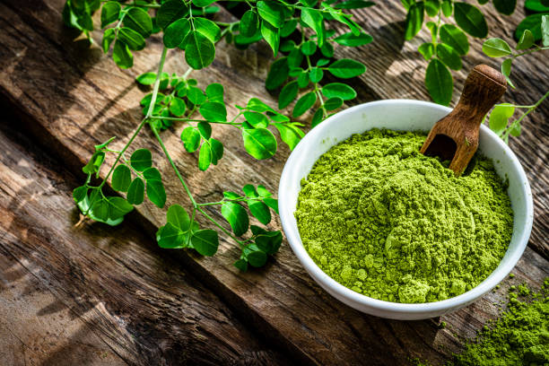

Organic Moringa Leaf Powder
Gently dried to preserve nutrients and vibrant color. Perfect for superfood and nutraceutical applications in the USA.
Color: Bright Green
Shelf Life: 12 Months
MOQ: 1000 kg
Certificates: USDA Organic, Lab Tested, COA